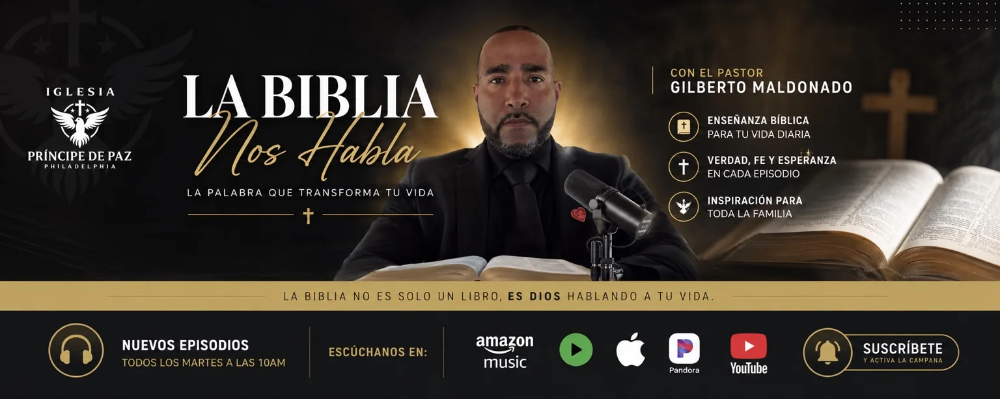
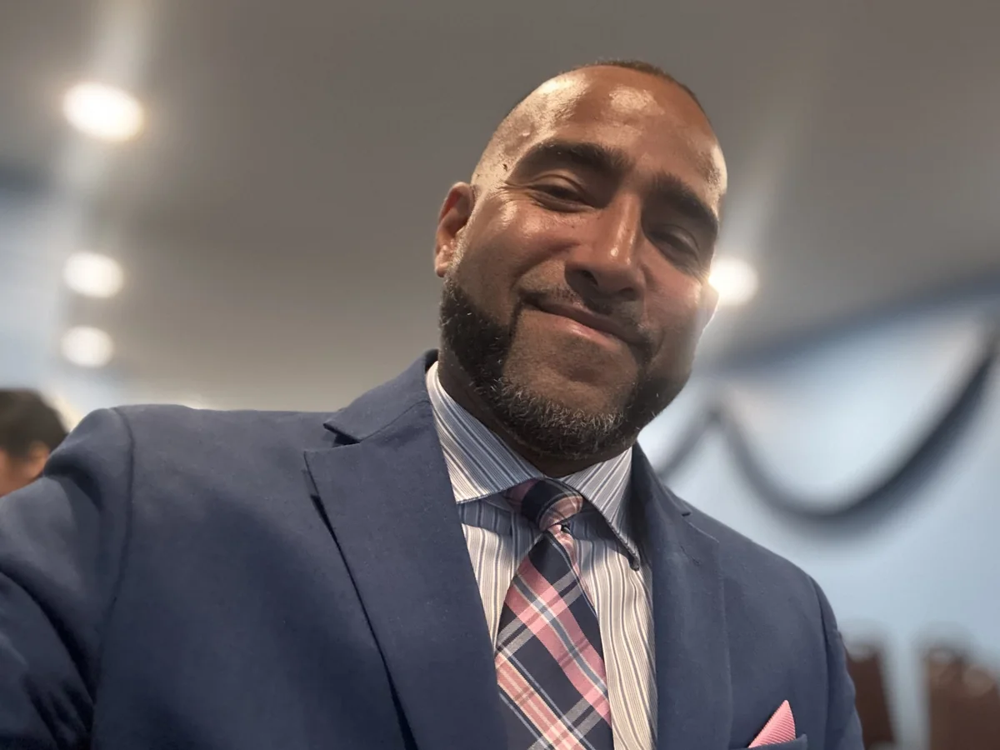

Miércoles
8:00 p. m.
VERDAD · FE · ESPERANZA
Predicaciones, estudios y recursos bíblicos con el Pastor Gilberto Maldonado.
“La Biblia no es solo un libro, es Dios hablando a tu vida.”
PREDICACIONES Y PODCAST

Mensajes centrados en Cristo, enseñanza bíblica y palabras de esperanza para toda la familia.
Suscribirse en YouTube
CONOZCA AL PASTOR
El Pastor Gilberto Maldonado sirve en la enseñanza fiel de las Escrituras, la predicación del evangelio, el fortalecimiento de las familias y la obra misionera.
Por medio de La Biblia Nos Habla, comparte mensajes claros y prácticos para ayudar a cada persona a crecer en su relación con Dios.
MISIONES 2026
Lanquín, Alta Verapaz, Guatemala
En julio de 2026 celebramos junto a la comunidad la inauguración del templo, compartimos el evangelio y ministramos a niños, jóvenes y familias.
HISTORIA VISUAL
VIDEO DE LA MISIÓN
IGLESIA PRÍNCIPE DE PAZ · PHILADELPHIA
8:00 p. m.
8:00 p. m.
10:00 a. m.
PETICIONES DE ORACIÓN
Comparta su petición con respeto y confianza. Este formulario puede conectarse más adelante al correo oficial del ministerio.